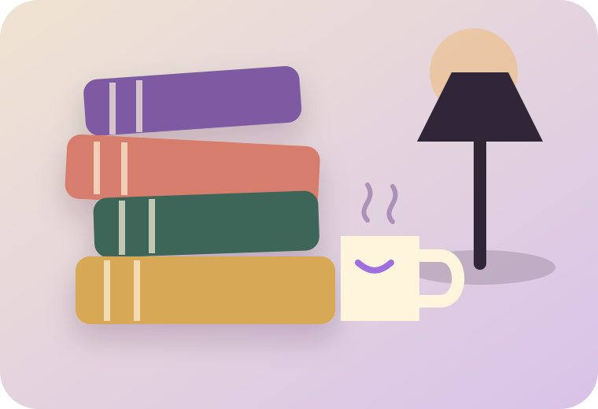

Lecturas ordenadas, progreso visible
Tu biblioteca ya no depende de la memoria.
Guarda lo que quieres leer, controla por qué página vas o introduce el porcentaje de Kindle y conserva una ficha completa de cada libro.
Comprobando conexión…

Resumen de lectura
Mi biblioteca
Todavía no hay libros en esta vista
Añade uno manualmente o búscalo en Google Books.
Buscador conectado con Google Books
Encuentra una edición y añádela.
Busca por título, autor, tema o ISBN. Los datos de la ficha se rellenarán automáticamente.
Escribe una búsqueda para ver resultados.